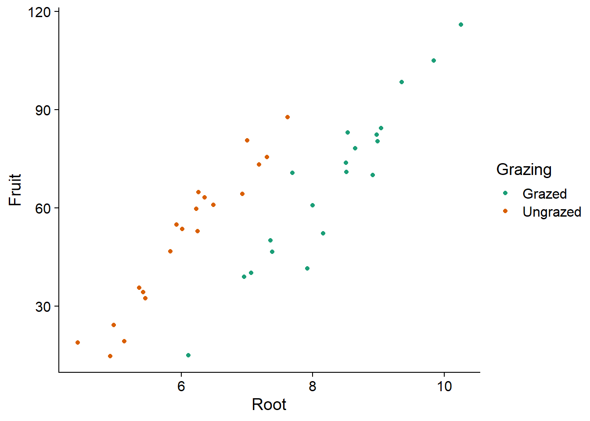
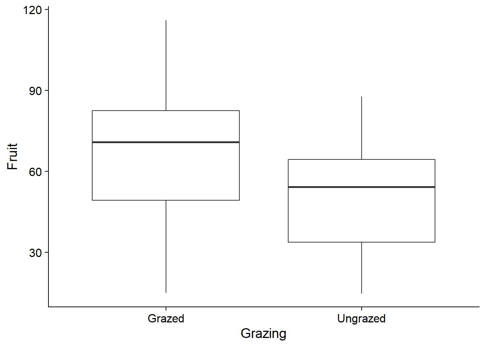
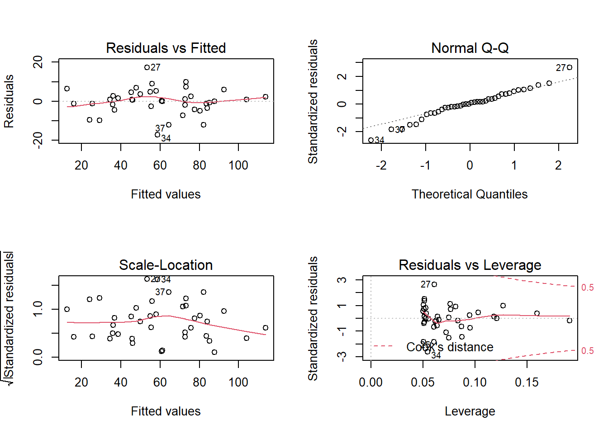
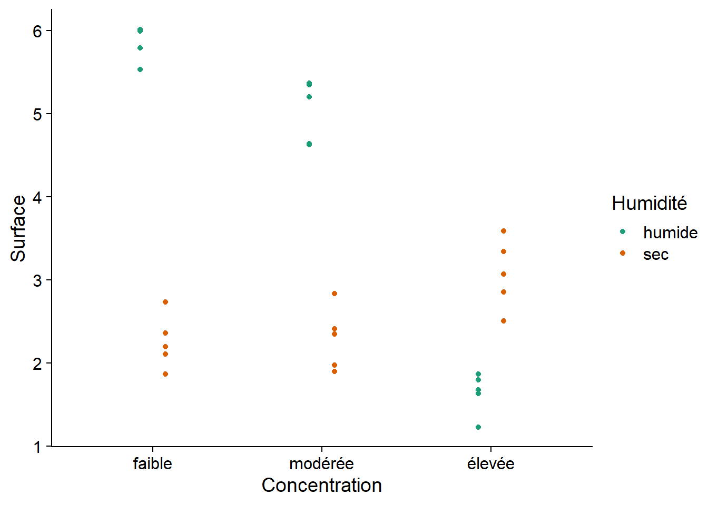
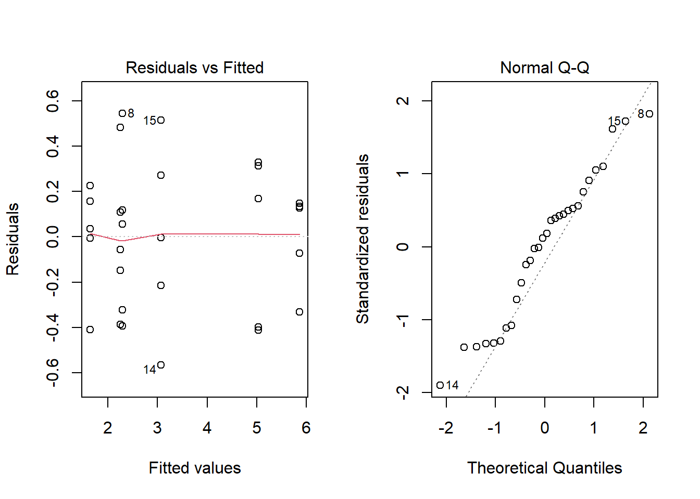
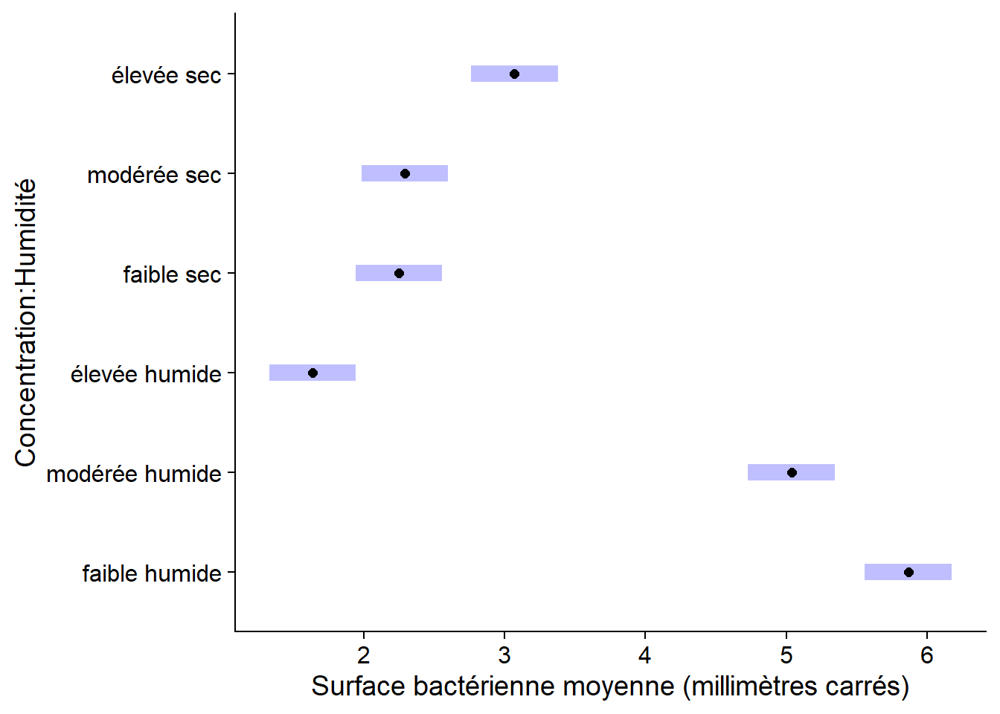
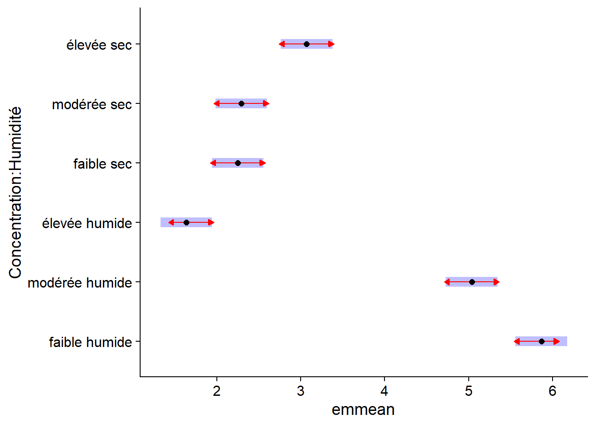
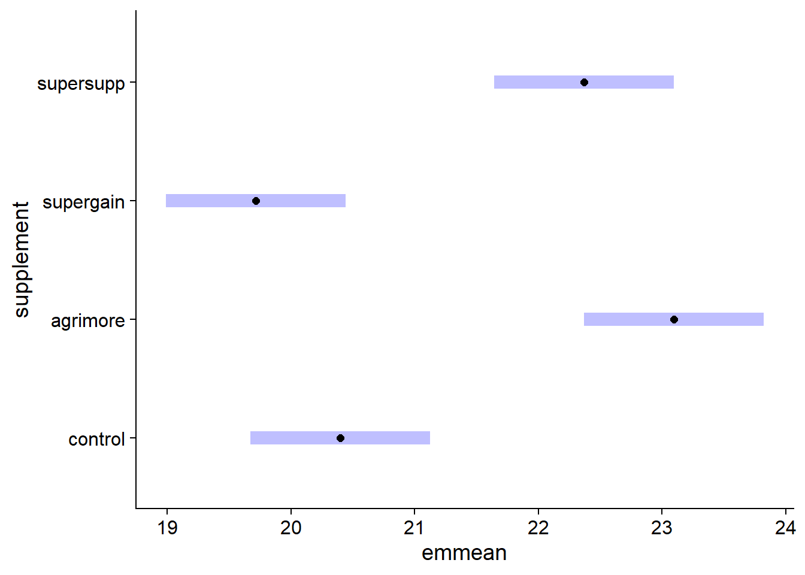
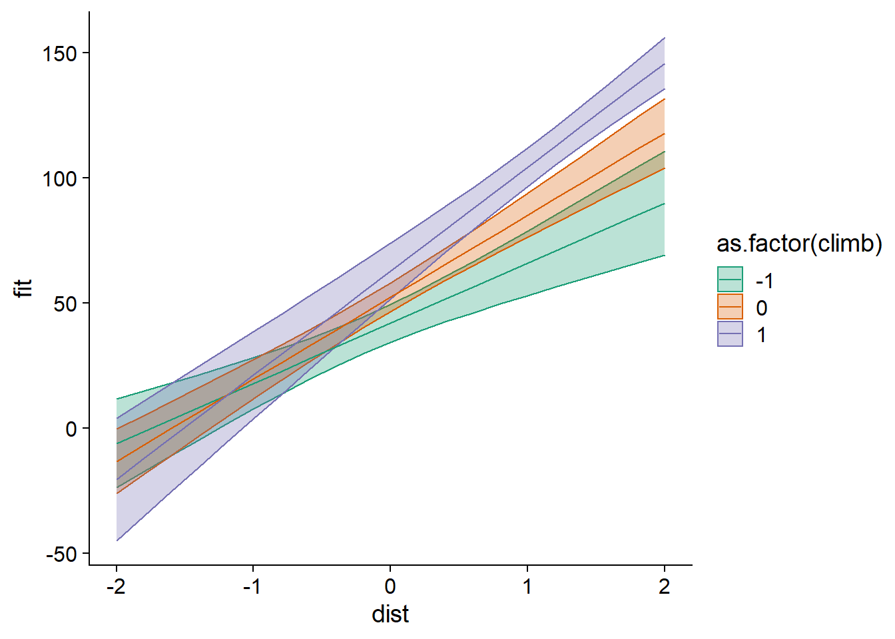

Régression linéaire multiple
12 octobre 2021
Objectifs
Estimer et interpréter les paramètres d’une régression linéaire incluant plusieurs variables catégorielles et/ou numériques.
Expliquer la signification d’une interaction entre deux variables et interpréter son coefficient.
Utiliser le package emmeans pour comparer la réponse moyenne entre les différents niveaux d’une variable catégorielle.
Savoir comment et pourquoi normaliser les prédicteurs dans une régression linéaire multiple.
Régression linéaire multiple
Le modèle de régression linéaire multiple représente la relation entre une variable réponse et \(m\) prédicteurs \(x_1\), \(x_2\), …, \(x_m\).
\[ y = \beta_0 + \beta_1 x_1 + \beta_2 x_2 + ... + \beta_m x_m + \epsilon = \beta_0 + \sum_{i = 1}^m \beta_i x_i + \epsilon \]
Comme dans le cas de la régression linéaire simple, les coefficients \(\beta\) peuvent être calculés à partir de la méthode des moindres carrés. Dans ce modèle, chaque coefficient \(\beta_i\) (sauf \(\beta_0\)) est la dérivée partielle de \(y\) par rapport à un prédicteur \(x_i\). En d’autres mots, ce coefficient représente la différence moyenne de \(y\) associée à une différence d’une unité de \(x_i\) et aucune différence au niveau des autres prédicteurs.
Un modèle de régression peut inclure plusieurs prédicteurs catégoriels ou numériques. Pour ce cours-ci, nous présenterons des exemples incluant:
un prédicteur catégoriel et un prédicteur numérique (dans un contexte expérimental, ce modèle est dénommé analyse de la covariance ou ANCOVA);
deux prédicteurs catégoriels (ANOVA à deux facteurs);
deux prédicteurs numériques.
Analyse de la covariance
Le tableau de données compensation.csv est tiré du livre de Crawley, Statistics: An introduction using R. Il contient des données sur la masse des graines produites par une espèce de plante (Fruit) en fonction de la taille des racines (Root) et selon que la plante subisse ou non un pâturage (Grazing).
comp <- read.csv("../donnees/compensation.csv")
str(comp)## 'data.frame': 40 obs. of 3 variables:
## $ Root : num 6.22 6.49 4.92 5.13 5.42 ...
## $ Fruit : num 59.8 61 14.7 19.3 34.2 ...
## $ Grazing: chr "Ungrazed" "Ungrazed" "Ungrazed" "Ungrazed" ...Inspectons d’abord les données.
ggplot(comp, aes(x = Root, y = Fruit, color = Grazing)) +
geom_point() +
scale_color_brewer(palette = "Dark2")
Le graphique montre bien l’existence d’une relation linéaire entre la taille des racines et la production de graines, ainsi que l’effet du traitement: pour la même taille des racines, le pâturage réduit la production de graines. Notez que si on n’avait pas mesuré les racines, on pourrait croire que l’effet du pâturage est positif.
ggplot(comp, aes(x = Grazing, y = Fruit)) +
geom_boxplot()
Cela est dû au fait que les plantes subissant le pâturage avaient (en moyenne) de plus grandes racines au départ. La taille des racines est donc une variable confondante, c’est-à-dire qu’elle est corrélée à la fois avec la variable réponse et avec le traitement dont on cherche à estimer l’effet sur cette réponse. Il faut donc l’inclure dans le modèle pour bien estimer l’effet du pâturage.
Voici un modèle linéaire où l’effet des deux prédicteurs est additif, tel qu’indiqué par le signe + dans la formule du modèle en R:
mod_comp <- lm(Fruit ~ Grazing + Root, data = comp)
summary(mod_comp)##
## Call:
## lm(formula = Fruit ~ Grazing + Root, data = comp)
##
## Residuals:
## Min 1Q Median 3Q Max
## -17.1920 -2.8224 0.3223 3.9144 17.3290
##
## Coefficients:
## Estimate Std. Error t value Pr(>|t|)
## (Intercept) -127.829 9.664 -13.23 1.35e-15 ***
## GrazingUngrazed 36.103 3.357 10.75 6.11e-13 ***
## Root 23.560 1.149 20.51 < 2e-16 ***
## ---
## Signif. codes: 0 '***' 0.001 '**' 0.01 '*' 0.05 '.' 0.1 ' ' 1
##
## Residual standard error: 6.747 on 37 degrees of freedom
## Multiple R-squared: 0.9291, Adjusted R-squared: 0.9252
## F-statistic: 242.3 on 2 and 37 DF, p-value: < 2.2e-16Interprétation des résultats
Si \(x_1\) est la variable de pâturage (0 = Grazed, 1 = Ungrazed selon le codage par défaut dans R) et que \(x_2\) est la taille des racines, l’expression mathématique de ce modèle est:
\[ y = \beta_0 + \beta_1 x_1 + \beta_2 x_2 + \epsilon \]
Pour simplifier l’interprétation des coefficients, on peut séparer le cas avec pâturage (\(x_1 = 0\)):
\[ y = \beta_0 + \beta_2 x_2 + \epsilon \]
du cas sans pâturage (\(x_1 = 1\)):
\[ y = \beta_0 + \beta_1 + \beta_2 x_2 + \epsilon \]
On peut maintenant intepréter les coefficients comme suit:
- \(\beta_0\) (
Interceptdans le tableau sommaire) est l’ordonnée à l’origine de la droite Fruit vs. Root avec pâturage. - \(\beta_1\) (
GrazingUngrazed) est l’effet de l’absence de pâturage sur l’ordonnée à l’origine de Fruit vs. Root. - \(\beta_2\) (
Root) est la pente de la droite Fruit vs. Root avec ou sans pâturage.
Puisque la pente est la même avec ou sans pâturage, le coefficient \(\beta_1\) correspond à une translation sur l’axe des \(y\) de la droite de régression. Ce modèle des effets additifs d’un traitement et d’une variable numérique est donc représenté par deux droites parallèles, ce qui correspond assez bien à notre visualisation des données. En outre, la valeur du \(R^2\) (0.93) indique que le modèle explique une grande partie de la variation observée dans les données.
Même une grande valeur de \(R^2\) ne signifie pas nécessairement que le modèle est approprié. Il faut toujours observer les graphiques de diagnostic. Excepté la présence de quelques valeurs extrêmes dans le diagramme quantile-quantile, les suppositions semblent bien respectées.

Notez que le numéro de la rangée du tableau de données est indiqué à côté de certains points extrêmes, pour faciliter l’identification de points problématiques.
Le test \(F\) rapporté au bas du sommaire des résultats de lm correspond à l’hypothèse nulle d’absence d’effet pour tous les prédicteurs.
On peut aussi obtenir un tableau d’ANOVA conventionnel en appliquant la fonction anova au résultat de lm.
anova(mod_comp)## Analysis of Variance Table
##
## Response: Fruit
## Df Sum Sq Mean Sq F value Pr(>F)
## Grazing 1 2910.4 2910.4 63.929 1.397e-09 ***
## Root 1 19148.9 19148.9 420.616 < 2.2e-16 ***
## Residuals 37 1684.5 45.5
## ---
## Signif. codes: 0 '***' 0.001 '**' 0.01 '*' 0.05 '.' 0.1 ' ' 1Ce tableau indique quelle portion de la somme des écarts au carré est expliquée par chacun des prédicteurs, ainsi que la portion résiduelle.
Ordre des prédicteurs
Les fonctions aov et anova dans R traitent les prédicteurs de façon séquentielle, c’est-à-dire que l’effet de chaque prédicteur est calculé par rapport aux résidus du modèle incluant les prédicteurs précédents. Dans notre exemple, la somme des écarts carrés pour le prédicteur Root est basée sur les résidus du modèle incluant seulement Grazing.
C’est ce qu’on appelle une “somme des écarts carrés de Type I” en statistiques. En particulier, cela signifie que le tableau d’ANOVA ne serait pas nécessairement le même en changeant l’ordre des prédicteurs, ex.: Fruit ~ Root + Grazing. D’autres packages en R permettent de réaliser une ANOVA avec des sommes des écarts carrés de Type II et III, mais nous ne verrons pas ces concepts dans ce cours.
Comme nous avons mentionné plus tôt, les coefficients de la régression linéaire multiple estiment l’effet partiel de chaque prédicteur, c’est-à-dire l’effet d’une différence au niveau de ce prédicteur entre deux cas qui ne diffèrent pour aucun autre prédicteur. Pour cette raison, l’ordre des prédicteurs n’influence pas les estimés obtenus avec lm.
Modèle avec interaction
Le modèle précédent suppose que les effets de la taille des racines et du pâturage sur la masse des graines sont additifs: autrement dit, la différence entre les deux traitements de pâturage est la même pour chaque valeur de Root et la pente de Fruit vs. Root est la même pour les cas avec et sans pâturage.
Pour considérer la possibilité que l’effet d’un prédicteur sur la réponse dépende de la valeur d’un autre prédicteur, nous devons spécifier une interaction entre ces deux prédicteurs. Dans la formule d’un modèle en R, l’interaction est indiquée par un symbole de multiplication * entre les variables au lieu du symbole d’addition +.
mod_comp_inter <- lm(Fruit ~ Grazing * Root, data = comp)
summary(mod_comp_inter)##
## Call:
## lm(formula = Fruit ~ Grazing * Root, data = comp)
##
## Residuals:
## Min 1Q Median 3Q Max
## -17.3177 -2.8320 0.1247 3.8511 17.1313
##
## Coefficients:
## Estimate Std. Error t value Pr(>|t|)
## (Intercept) -125.173 12.811 -9.771 1.15e-11 ***
## GrazingUngrazed 30.806 16.842 1.829 0.0757 .
## Root 23.240 1.531 15.182 < 2e-16 ***
## GrazingUngrazed:Root 0.756 2.354 0.321 0.7500
## ---
## Signif. codes: 0 '***' 0.001 '**' 0.01 '*' 0.05 '.' 0.1 ' ' 1
##
## Residual standard error: 6.831 on 36 degrees of freedom
## Multiple R-squared: 0.9293, Adjusted R-squared: 0.9234
## F-statistic: 157.6 on 3 and 36 DF, p-value: < 2.2e-16Si \(x_1\) est la variable de pâturage (0 = Grazed, 1 = Ungrazed selon le codage par défaut dans R) et que \(x_2\) est la taille des racines, l’expression mathématique de ce modèle est:
\[ y = \beta_0 + \beta_1 x_1 + \beta_2 x_2 + \beta_{12} x_1 x_2 + \epsilon \]
L’interaction est donc équivalente à l’ajout d’un nouveau prédicteur au modèle, égal au produit des deux variables qui interagissent. Séparons de nouveau en deux équations selon le traitement:
Avec pâturage (\(x_1 = 0\)):
\[ y = \beta_0 + \beta_2 x_2 \]
Sans pâturage (\(x_1 = 1\)):
\[ y = (\beta_0 + \beta_1) + (\beta_2 + \beta_{12}) x_2 \]
Pour ce modèle avec interaction, l’interprétation des coefficients change un peu:
- \(\beta_0\) (
Interceptdans le tableau sommaire) est l’ordonnée à l’origine de la droite Fruit vs. Root avec pâturage. - \(\beta_1\) (
GrazingUngrazed) est l’effet de l’absence de pâturage sur l’ordonnée à l’origine de Fruit vs. Root. - \(\beta_2\) (
Root) est la pente de la droite Fruit vs. Root avec pâturage. - \(\beta_{12}\) (
GrazingUngrazed:Root) est l’effet de l’absence de pâturage sur la pente de la droite Fruit vs. Root.
Le modèle avec interaction est donc équivalent à estimer séparément la droite de régression (ordonnée à l’origine et pente) pour chacun des deux traitements.
Comparé au modèle additif, notez que l’effet de l’absence de pâturage (GrazingUngrazed) a maintenant une erreur-type beaucoup plus élevée et une valeur \(p\) plus grande.
summary(mod_comp)$coefficients## Estimate Std. Error t value Pr(>|t|)
## (Intercept) -127.82936 9.664095 -13.22725 1.349804e-15
## GrazingUngrazed 36.10325 3.357396 10.75335 6.107286e-13
## Root 23.56005 1.148771 20.50892 8.408231e-22summary(mod_comp_inter)$coefficients## Estimate Std. Error t value Pr(>|t|)
## (Intercept) -125.1730569 12.811165 -9.7706222 1.150540e-11
## GrazingUngrazed 30.8057049 16.841823 1.8291194 7.567489e-02
## Root 23.2403732 1.530771 15.1821314 3.173208e-17
## GrazingUngrazed:Root 0.7560338 2.354111 0.3211547 7.499503e-01Ceci est dû au fait que l’ordonnée à l’origine, correspondant à Root = 0, se situe loin de l’étendue des données (les valeurs de Root sont toutes entre 4 et 11). Donc, un petit changement de pente au milieu du graphique peut mener à un changement important d’ordonnée à l’origine et l’incertitude du coefficient d’interaction (la différence de pente) se répercute aussi sur l’estimation de la différence d’ordonnée à l’origine.
Le tableau d’ANOVA pour un modèle avec interaction inclut la portion de la somme des écarts carrés due à la variation de chaque prédicteur, ainsi que leur interaction. La portion expliquée par l’interaction est basée sur la différence entre les écarts carrés résiduels du modèle sans interaction et ceux du modèle avec interaction. Dans ce cas-ci, l’effet de l’interaction n’est pas significatif, le modèle additif est donc préférable.
anova(mod_comp_inter)## Analysis of Variance Table
##
## Response: Fruit
## Df Sum Sq Mean Sq F value Pr(>F)
## Grazing 1 2910.4 2910.4 62.3795 2.262e-09 ***
## Root 1 19148.9 19148.9 410.4201 < 2.2e-16 ***
## Grazing:Root 1 4.8 4.8 0.1031 0.75
## Residuals 36 1679.6 46.7
## ---
## Signif. codes: 0 '***' 0.001 '**' 0.01 '*' 0.05 '.' 0.1 ' ' 1Pourquoi l’effet du pâturage (Grazing) est-il significatif dans le tableau d’ANOVA alors que le coefficient GrazingUngrazed du modèle linéaire ne l’est pas? Dans le tableau d’ANOVA, on teste s’il y a une différence significative de la moyenne de Fruit entre les plantes subissant ou non un pâturage, tandis que le coefficient du modèle linéaire réfère à la différence entre les deux traitements lorsque Root est 0 (ordonnée à l’origine). Dans le cas où les variables interagissent, ces deux tests ne sont pas équivalents, car la différence entre les deux droites (avec ou sans pâturage) dépend de la valeur de Root.
ANOVA à deux facteurs
Exemple
Pour illustrer l’ANOVA à deux facteurs, nous utiliserons d’abord le jeu de données growth.csv provenant du manuel Statistics: An Introduction Using R. L’expérience compare le gain de poids (gain) de 48 animaux suivant trois types de régime alimentaire (diet) avec quatre types de suppléments (supplement). Il y a donc 12 groupes (toutes les combinaisons des 3 régimes et 4 suppléments) de 4 individus chacun.
growth <- read.csv("../donnees/growth.csv")
str(growth)## 'data.frame': 48 obs. of 3 variables:
## $ supplement: chr "supergain" "supergain" "supergain" "supergain" ...
## $ diet : chr "wheat" "wheat" "wheat" "wheat" ...
## $ gain : num 17.4 16.8 18.1 15.8 17.7 ...ggplot(growth, aes(x = supplement, y = gain, color = diet)) +
# position_dodge décale les points de différentes couleurs
geom_point(position = position_dodge(width = 0.3)) +
scale_color_brewer(palette = "Dark2")
À première vue, il semble plausible que les effets du régime et du supplément soient additifs, car la différence entre les régimes est semblable d’un supplément à l’autre et la différence entre les suppléments est semblable d’un régime à l’autre. D’ailleurs, le tableau d’ANOVA du modèle avec interaction ne montre pas d’effet significatif de cette interaction:
aov_growth_inter <- aov(gain ~ diet * supplement, data = growth)
summary(aov_growth_inter)## Df Sum Sq Mean Sq F value Pr(>F)
## diet 2 287.17 143.59 83.52 3.00e-14 ***
## supplement 3 91.88 30.63 17.82 2.95e-07 ***
## diet:supplement 6 3.41 0.57 0.33 0.917
## Residuals 36 61.89 1.72
## ---
## Signif. codes: 0 '***' 0.001 '**' 0.01 '*' 0.05 '.' 0.1 ' ' 1Notez qu’il est possible d’utiliser la fonction aov ici car nous n’avons que des variables catégorielles et l’échantillon est équilibré (4 réplicats par combinaison de régime et de supplément).
Voici les résultats du modèle additif. Les deux facteurs ont un effet significatif et le régime explique une plus grande portion de la variance du gain de poids (d’après la somme des écarts carrés) que le supplément.
aov_growth_add <- aov(gain ~ diet + supplement, data = growth)
summary(aov_growth_add)## Df Sum Sq Mean Sq F value Pr(>F)
## diet 2 287.17 143.59 92.36 4.20e-16 ***
## supplement 3 91.88 30.63 19.70 3.98e-08 ***
## Residuals 42 65.30 1.55
## ---
## Signif. codes: 0 '***' 0.001 '**' 0.01 '*' 0.05 '.' 0.1 ' ' 1Les graphiques de diagnostic n’indiquent pas de problème:

D’après le test des étendues de Tukey, les trois régimes ont un effet différent (blé < avoine < orge). Pour les suppléments, agrimore et supersupp ont un effet plus grand que supergain et control.
TukeyHSD(aov_growth_add)## Tukey multiple comparisons of means
## 95% family-wise confidence level
##
## Fit: aov(formula = gain ~ diet + supplement, data = growth)
##
## $diet
## diff lwr upr p adj
## oats-barley -3.092817 -4.163817 -2.021817 0e+00
## wheat-barley -5.990298 -7.061298 -4.919297 0e+00
## wheat-oats -2.897481 -3.968481 -1.826481 2e-07
##
## $supplement
## diff lwr upr p adj
## control-agrimore -2.6967005 -4.0583332 -1.3350677 0.0000234
## supergain-agrimore -3.3814586 -4.7430914 -2.0198259 0.0000003
## supersupp-agrimore -0.7273521 -2.0889849 0.6342806 0.4888738
## supergain-control -0.6847581 -2.0463909 0.6768746 0.5400389
## supersupp-control 1.9693484 0.6077156 3.3309811 0.0020484
## supersupp-supergain 2.6541065 1.2924737 4.0157392 0.0000307Représentation avec les contrastes
Voici les résultats obtenus pour le même modèle avec lm:
lm_growth_add <- lm(gain ~ diet + supplement, data = growth)
summary(lm_growth_add)##
## Call:
## lm(formula = gain ~ diet + supplement, data = growth)
##
## Residuals:
## Min 1Q Median 3Q Max
## -2.30792 -0.85929 -0.07713 0.92052 2.90615
##
## Coefficients:
## Estimate Std. Error t value Pr(>|t|)
## (Intercept) 26.1230 0.4408 59.258 < 2e-16 ***
## dietoats -3.0928 0.4408 -7.016 1.38e-08 ***
## dietwheat -5.9903 0.4408 -13.589 < 2e-16 ***
## supplementcontrol -2.6967 0.5090 -5.298 4.03e-06 ***
## supplementsupergain -3.3815 0.5090 -6.643 4.72e-08 ***
## supplementsupersupp -0.7274 0.5090 -1.429 0.16
## ---
## Signif. codes: 0 '***' 0.001 '**' 0.01 '*' 0.05 '.' 0.1 ' ' 1
##
## Residual standard error: 1.247 on 42 degrees of freedom
## Multiple R-squared: 0.8531, Adjusted R-squared: 0.8356
## F-statistic: 48.76 on 5 and 42 DF, p-value: < 2.2e-16Souvenons-nous que par défaut, R utilise un codage de traitement pour représenter les variables catégorielles dans une régression linéaire, où le premier niveau du facteur (en ordre alphabétique) sert de référence. Ici, barley et agrimore sont les niveaux de référence pour le régime et le supplément, respectivement. Nous pouvons donc interpréter chaque coefficient ainsi:
l’ordonnée à l’origine est le gain de poids moyen pour les niveaux de référence (orge et agrimore);
les coefficients
dietoatsetdietwheatdonnent la différence moyenne de gain entre le régime correspondant (avoine ou blé) et le régime d’orge;les trois derniers coefficients donnent la différence moyenne de gain entre le supplément correspondant et le supplément agrimore.
Le gain de poids moyen pour toute combinaison d’un régime et d’un supplément peut être obtenue en additionnant les coefficients correspondants. Par exemple, le gain moyen pour un régime d’avoine avec le supplément supergain est de: 26.12 (ordonnée à l’origine) - 3.09 (avoine) - 3.38 (supergain) = 19.65.
Tel que vu au dernier cours, nous pouvons modifier les contrastes pour mieux représenter les questions qui nous intéressent. Le code ci-dessous convertit les deux prédicteurs en facteurs, choisit le groupe témoin control comme référence pour supplement et applique un codage d’effet pour diet.
growth <- mutate(growth, diet = as.factor(diet),
supplement = relevel(as.factor(supplement), ref = "control"))
contrasts(growth$diet) <- "contr.sum"
colnames(contrasts(growth$diet)) <- c("barley" , "oats")
lm_growth_add <- lm(gain ~ diet + supplement, data = growth)
summary(lm_growth_add)##
## Call:
## lm(formula = gain ~ diet + supplement, data = growth)
##
## Residuals:
## Min 1Q Median 3Q Max
## -2.30792 -0.85929 -0.07713 0.92052 2.90615
##
## Coefficients:
## Estimate Std. Error t value Pr(>|t|)
## (Intercept) 20.39861 0.35994 56.673 < 2e-16 ***
## dietbarley 3.02770 0.25451 11.896 4.93e-15 ***
## dietoats -0.06511 0.25451 -0.256 0.799333
## supplementagrimore 2.69670 0.50903 5.298 4.03e-06 ***
## supplementsupergain -0.68476 0.50903 -1.345 0.185772
## supplementsupersupp 1.96935 0.50903 3.869 0.000375 ***
## ---
## Signif. codes: 0 '***' 0.001 '**' 0.01 '*' 0.05 '.' 0.1 ' ' 1
##
## Residual standard error: 1.247 on 42 degrees of freedom
## Multiple R-squared: 0.8531, Adjusted R-squared: 0.8356
## F-statistic: 48.76 on 5 and 42 DF, p-value: < 2.2e-16Dans ce cas, nous pouvons interpréter les coeffiicents ainsi:
l’ordonnée à l’origine est le gain moyen pour le groupe témoin (control), en faisant la moyenne des trois régimes;
les coefficients
dietbarleyetdietoatsdonnent la différence moyenne de gain des régimes d’orge et d’avoine comparés à la moyenne des trois régimes. La différence moyenne pour le troisième régime (blé) peut être obtenue en prenant l’opposé de la somme des autres effets: -(3.02 - 0.07) = -2.95.les trois derniers coefficients donnent la différence moyenne de gain entre chaque supplément et le groupe témoin.
Modèle avec interaction
Le jeu de données antibiot.csv contient des mesures de prolifération bactérienne (surface couverte en mm\(^2\)) en fonction de l’humidité (sec, humide) et de la concentration d’antibiotique (faible, modérée, élevée).
# fileEncoding = "UTF-8" permet de lire les accents correctement
antibiot <- read.csv("../donnees/antibiot.csv", fileEncoding = "UTF-8")
str(antibiot)## 'data.frame': 30 obs. of 3 variables:
## $ Surface : num 2.1 2.73 1.86 2.36 2.2 ...
## $ Humidité : chr "sec" "sec" "sec" "sec" ...
## $ Concentration: chr "faible" "faible" "faible" "faible" ...Nous devons manuellement spécifier les niveaux du facteur Concentration pour éviter qu’ils ne soient placés en ordre alphabétique.
antibiot$Concentration <- factor(antibiot$Concentration,
levels = c("faible", "modérée", "élevée"))
levels(antibiot$Concentration)## [1] "faible" "modérée" "élevée"Voici le graphique de ces données. Est-ce qu’un modèle avec des effets additifs de la concentration d’antibiotique et de l’humidité serait approprié ici?
ggplot(antibiot, aes(x = Concentration, y = Surface, color = Humidité)) +
geom_point(position = position_dodge(width = 0.3)) +
scale_color_brewer(palette = "Dark2")
Ici, il y a une interaction claire entre les deux facteurs. Notamment, les conditions humides sont associées à une plus grande surface bactérienne pour les concentrations faible et modérée d’antibiotiques, mais les conditions sèches ont une plus grande surface bactérienne lorsque la concentration est élevée.
Voici le sommaire et les graphiques de diagnostic pour le modèle de la surface bactérienne en fonction de l’interaction entre les deux facteurs.
aov_antibio <- aov(Surface ~ Concentration * Humidité, antibiot)
summary(aov_antibio)## Df Sum Sq Mean Sq F value Pr(>F)
## Concentration 2 15.93 7.965 71.5 7.76e-11 ***
## Humidité 1 20.23 20.228 181.6 1.09e-12 ***
## Concentration:Humidité 2 36.40 18.199 163.4 1.05e-14 ***
## Residuals 24 2.67 0.111
## ---
## Signif. codes: 0 '***' 0.001 '**' 0.01 '*' 0.05 '.' 0.1 ' ' 1
L’interaction entre les 3 catégories de concentration et les 2 catégories d’humidité définit 6 groupes, donc il y a 15 comparaisons possibles pour l’interaction, comme le montre le résultat de TukeyHSD.
TukeyHSD(aov_antibio)## Tukey multiple comparisons of means
## 95% family-wise confidence level
##
## Fit: aov(formula = Surface ~ Concentration * Humidité, data = antibiot)
##
## $Concentration
## diff lwr upr p adj
## modérée-faible -0.3939894 -0.7667378 -0.02124113 0.0368807
## élevée-faible -1.7046765 -2.0774249 -1.33192823 0.0000000
## élevée-modérée -1.3106871 -1.6834354 -0.93793878 0.0000000
##
## $Humidité
## diff lwr upr p adj
## sec-humide -1.642264 -1.893794 -1.390734 0
##
## $`Concentration:Humidité`
## diff lwr upr p adj
## modérée:humide-faible:humide -0.82921989 -1.481887432 -0.1765523 0.0073592
## élevée:humide-faible:humide -4.22827694 -4.880944489 -3.5756094 0.0000000
## faible:sec-faible:humide -3.61481768 -4.267485222 -2.9621501 0.0000000
## modérée:sec-faible:humide -3.57357668 -4.226244229 -2.9209091 0.0000000
## élevée:sec-faible:humide -2.79589383 -3.448561371 -2.1432263 0.0000000
## élevée:humide-modérée:humide -3.39905706 -4.051724600 -2.7463895 0.0000000
## faible:sec-modérée:humide -2.78559779 -3.438265333 -2.1329302 0.0000000
## modérée:sec-modérée:humide -2.74435680 -3.397024340 -2.0916893 0.0000000
## élevée:sec-modérée:humide -1.96667394 -2.619341482 -1.3140064 0.0000000
## faible:sec-élevée:humide 0.61345927 -0.039208277 1.2661268 0.0740073
## modérée:sec-élevée:humide 0.65470026 0.002032716 1.3073678 0.0489732
## élevée:sec-élevée:humide 1.43238312 0.779715574 2.0850507 0.0000070
## modérée:sec-faible:sec 0.04124099 -0.611426550 0.6939085 0.9999549
## élevée:sec-faible:sec 0.81892385 0.166256308 1.4715914 0.0082690
## élevée:sec-modérée:sec 0.77768286 0.125015314 1.4303504 0.0131278Nous verrons dans la section suivante une méthode facilitant la visualisation de ces comparaisons.
Le modèle linéaire correspondant à cette ANOVA comporte 6 coefficients:
lm_antibio <- lm(Surface ~ Concentration * Humidité, antibiot)
summary(lm_antibio)##
## Call:
## lm(formula = Surface ~ Concentration * Humidité, data = antibiot)
##
## Residuals:
## Min 1Q Median 3Q Max
## -0.56688 -0.29550 0.04501 0.16490 0.54423
##
## Coefficients:
## Estimate Std. Error t value Pr(>|t|)
## (Intercept) 5.8657 0.1493 39.298 < 2e-16 ***
## Concentrationmodérée -0.8292 0.2111 -3.928 0.000631 ***
## Concentrationélevée -4.2283 0.2111 -20.031 < 2e-16 ***
## Humiditésec -3.6148 0.2111 -17.125 5.87e-15 ***
## Concentrationmodérée:Humiditésec 0.8705 0.2985 2.916 0.007572 **
## Concentrationélevée:Humiditésec 5.0472 0.2985 16.907 7.80e-15 ***
## ---
## Signif. codes: 0 '***' 0.001 '**' 0.01 '*' 0.05 '.' 0.1 ' ' 1
##
## Residual standard error: 0.3338 on 24 degrees of freedom
## Multiple R-squared: 0.9645, Adjusted R-squared: 0.9571
## F-statistic: 130.3 on 5 and 24 DF, p-value: < 2.2e-16L’ordonnée à l’origine est la surface moyenne pour les niveaux de référence (faible et humide).
Les coefficients
ConcentrationmodéréeetConcentrationélevéedonnent la différence de surface moyenne due à l’augmentation de concentration de faible à modérée et de faible à élevée, pour le cas humide.Le coefficient
Humiditésecdonne la différence de surface moyenne entre les cas sec et humide, pour une concentration faible.Finalement, les coefficients liés à l’interaction montrent la différence entre les surfaces moyennes pour les combinaisons “modérée et sec” et “élevée et sec”, comparées aux moyennes prédites par les effets additifs seulement. Autrement dit, la moyenne de la surface bactérienne pour la combinaison “modérée et sec” est égale à: 5.87 (ordonnée à l’origine) - 0.83 (concentration modérée) - 3.61 (sec) + 0.87 (interaction modérée-sec) = 2.30.
Visualisation des effets avec le package emmeans
L’exemple précédent démontre qu’en présence d’une interaction, il est difficile de calculer la moyenne de la réponse pour une combinaison de traitements donnés. Le package emmeans (estimated marginal means) effectue automatiquement le calcul des moyennes pour chaque combinaison de traitements, ainsi que leur intervalle de confiance.
Ci-dessous, nous appliquons la fonction emmeans au résultat du modèle lm_antibio. Le deuxième argument de la fonction spécifie les prédicteurs à considérer: ceux-ci sont indiqués sous forme de formule comme dans la fonction lm, mais sans variable réponse à gauche du ~.
library(emmeans)
em_antibio <- emmeans(lm_antibio, ~ Concentration * Humidité)
em_antibio## Concentration Humidité emmean SE df lower.CL upper.CL
## faible humide 5.87 0.149 24 5.56 6.17
## modérée humide 5.04 0.149 24 4.73 5.34
## élevée humide 1.64 0.149 24 1.33 1.95
## faible sec 2.25 0.149 24 1.94 2.56
## modérée sec 2.29 0.149 24 1.98 2.60
## élevée sec 3.07 0.149 24 2.76 3.38
##
## Confidence level used: 0.95La fonction plot appliquée aux résultats d’emmeans illustre les moyennes et leurs intervalles de confiance.
plot(em_antibio)
Il s’agit d’un graphique ggplot2, donc vous pouvez le personnaliser avec les commandes habituelles.
plot(em_antibio) +
labs(x = "Surface bactérienne moyenne (millimètres carrés)")
Les intervalles de confiance pour chaque moyenne ne nous permettent pas directement de déterminer si deux moyennes diffèrent de façon significative. Pour ce faire, nous spécifions comparisons = TRUE, ce qui ajoute au graphique des flèches de comparaison, basées sur un test de Tukey. Des flèches qui se recoupent sur l’axe de la variable réponse indiquent que les moyennes ne sont pas significativement différentes (à un seuil \(\alpha = 0.05\), par défaut).
plot(em_antibio, comparisons = TRUE)
Les comparaisons illustrées ici sont les mêmes que celles obtenues précédemment avec le test des étendues de Tukey, mais la visualisation des effets est simplifée. De plus, la fonction TukeyHSD ne s’applique qu’au résultat de la fonction aov, tandis qu’emmeans s’appliquent à tous les modèles de régression que nous verrons dans ce cours.
Lorsqu’un modèle est additif, nous pouvons estimer les moyennes pour un seul facteur. Dans ce cas, l’estimé indiqué correspond à la réponse moyenne pour chaque niveau du facteur, en prenant la moyenne de tous les autres prédicteurs. Dans l’exemple ci-dessous, nous calculons donc la moyenne du gain de poids pour chaque supplément, en faisant la moyenne des trois régimes.
em_growth_supp <- emmeans(lm_growth_add, ~ supplement)
em_growth_supp## supplement emmean SE df lower.CL upper.CL
## control 20.4 0.36 42 19.7 21.1
## agrimore 23.1 0.36 42 22.4 23.8
## supergain 19.7 0.36 42 19.0 20.4
## supersupp 22.4 0.36 42 21.6 23.1
##
## Results are averaged over the levels of: diet
## Confidence level used: 0.95plot(em_growth_supp)
Régression avec plusieurs prédicteurs numériques
Exemple
Le tableau de données hills du package MASS (inclus par défaut avec R) contient les records de temps (time, en minutes) pour des courses de vélo en Écosse en fonction de la distance horizontale (dist, en milles) et le dénivelé total du parcours (climb, en pieds).
library(MASS)
str(hills)## 'data.frame': 35 obs. of 3 variables:
## $ dist : num 2.5 6 6 7.5 8 8 16 6 5 6 ...
## $ climb: int 650 2500 900 800 3070 2866 7500 800 800 650 ...
## $ time : num 16.1 48.4 33.6 45.6 62.3 ...Pour un tableau de données avec plusieurs variables numériques, la fonction plot affiche une matrice de nuages de points pour chaque paire de variables.
plot(hills)
Les temps records semblent dépendre linéairement de la distance et du dénivelé. (La distance et le dénivelé semblent aussi corrélés, nous y reviendrons au prochain cours.) Nous appliquons donc un modèle linéaire à ces données.
mod_hills <- lm(time ~ dist + climb, hills)
Puisque les rangées de ce tableau de données sont identifiées par des noms (rownames dans R), ces noms apparaissent vis-à-vis les valeurs extrêmes dans les graphiques de diagnostic.
D’après ces graphiques, deux parcours (Knock Hill et Bens of Jura) ont un temps record beaucoup plus long qu’attendu (résidu positif important). Ces mêmes points ont aussi une grande influence sur les coefficients de la régression (d’après le quatrième graphique). Dans ce cas, il faudrait vérifier si ces parcours ont des particularités qui expliquent cette forte différence par rapport au modèle.
Graphiques de diagnostic avec lindia
En plus des graphiques de diagnostic obtenus avec plot, il est utile dans le cas d’une régression multiple de visualiser les résidus en fonction de chacun des prédicteurs. La fonction gg_resX du package lindia (pour linear diagnostics) réalise automatiquement ces graphiques à partir de la sortie du modèle.
library(lindia)
gg_resX(mod_hills, ncol = 2) # ncol: nombre de colonnes
La présence d’une tendance dans les résidus par rapport à un prédicteur indiquerait un effet non-linéaire possible pour ce prédicteur.
Le package lindia produit aussi d’autres graphiques d diagnostic semblables à ceux obtenus avec plot. Vous pouvez produire tous les graphiques de diagnostic d’un modèle avec la fonction gg_diagnose. Il s’agit de graphiques de type ggplot2, donc vous pouvez les personnaliser avec les fonctions habituelles.
Normalisation des variables
Regardons le sommaire des résultats du modèle:
summary(mod_hills)##
## Call:
## lm(formula = time ~ dist + climb, data = hills)
##
## Residuals:
## Min 1Q Median 3Q Max
## -16.215 -7.129 -1.186 2.371 65.121
##
## Coefficients:
## Estimate Std. Error t value Pr(>|t|)
## (Intercept) -8.992039 4.302734 -2.090 0.0447 *
## dist 6.217956 0.601148 10.343 9.86e-12 ***
## climb 0.011048 0.002051 5.387 6.45e-06 ***
## ---
## Signif. codes: 0 '***' 0.001 '**' 0.01 '*' 0.05 '.' 0.1 ' ' 1
##
## Residual standard error: 14.68 on 32 degrees of freedom
## Multiple R-squared: 0.9191, Adjusted R-squared: 0.914
## F-statistic: 181.7 on 2 and 32 DF, p-value: < 2.2e-16La valeur des coefficients signifie qu’en moyenne, chaque mille de distance ajoute 6.22 minutes au temps record tandis que chaque pied de dénivelé ajoute 0.01 minute. Puisque les prédicteurs n’ont pas les mêmes unités, la valeur des coefficients n’est pas indicatrice de l’importance de chaque variable. Dans ce cas-ci, dist varie entre 2 et 28 milles tandis que climb varie entre 300 et 7500 pieds.
Aussi, l’ordonnée à l’origine n’a pas vraiment de sens concret, puisqu’un parcours de longueur 0 n’est pas possible.
Afin de comparer l’influence de différents prédicteurs, il peut être utile de les normaliser ceux-ci, c’est-à-dire de transformer chaque valeur en soustrayant la moyenne et en divisant par l’écart-type. Dans R, la fonction scale effectue automatiquement cette transformation.
hills_scl <- hills
hills_scl[, -3] <- scale(hills_scl[, -3]) # on ne normalise pas la réponse
mod_hills_scl <- lm(time ~ dist + climb, data = hills_scl)
summary(mod_hills_scl)##
## Call:
## lm(formula = time ~ dist + climb, data = hills_scl)
##
## Residuals:
## Min 1Q Median 3Q Max
## -16.215 -7.129 -1.186 2.371 65.121
##
## Coefficients:
## Estimate Std. Error t value Pr(>|t|)
## (Intercept) 57.876 2.481 23.331 < 2e-16 ***
## dist 34.348 3.321 10.343 9.86e-12 ***
## climb 17.888 3.321 5.387 6.45e-06 ***
## ---
## Signif. codes: 0 '***' 0.001 '**' 0.01 '*' 0.05 '.' 0.1 ' ' 1
##
## Residual standard error: 14.68 on 32 degrees of freedom
## Multiple R-squared: 0.9191, Adjusted R-squared: 0.914
## F-statistic: 181.7 on 2 and 32 DF, p-value: < 2.2e-16Pour chaque point, la variable normalisée indique l’écart à la moyenne de la variable originale, exprimé en multiple de l’écart-type de la variable originale. Par exemple, dans cette version du modèle, le coefficient dist indique la différence de temps associée à une augmentation d’un écart-type de la distance horizontale. Les coefficients normalisés représentent ainsi l’effet d’une variable relativement aux écarts typiques observés pour cette variable.
Autre avantage de cette représentation, puisque les prédicteurs normalisés prennent une valeur de 0 à leur moyenne, la valeur de l’ordonnée à l’origine de la régression est la moyenne générale de la réponse (ici, le temps record moyen est d’environ 58 minutes).
La normalisation des prédicteurs ne fait que changer l’échelle des effets estimés. La significativité de l’effet de chaque prédicteur et les prédictions du modèle restent les mêmes.
Interaction entre variables continues
Comment interpréter l’interaction entre deux variables continues? Par exemple:
mod_hills_inter <- lm(time ~ dist * climb, hills_scl)
summary(mod_hills_inter)##
## Call:
## lm(formula = time ~ dist * climb, data = hills_scl)
##
## Residuals:
## Min 1Q Median 3Q Max
## -25.994 -4.968 -2.220 2.381 56.115
##
## Coefficients:
## Estimate Std. Error t value Pr(>|t|)
## (Intercept) 52.304 2.793 18.728 < 2e-16 ***
## dist 32.776 2.965 11.053 2.78e-12 ***
## climb 10.411 3.742 2.782 0.00911 **
## dist:climb 8.793 2.745 3.203 0.00314 **
## ---
## Signif. codes: 0 '***' 0.001 '**' 0.01 '*' 0.05 '.' 0.1 ' ' 1
##
## Residual standard error: 12.92 on 31 degrees of freedom
## Multiple R-squared: 0.9392, Adjusted R-squared: 0.9333
## F-statistic: 159.6 on 3 and 31 DF, p-value: < 2.2e-16Comme nous avons vu plus tôt, l’équation d’un modèle à deux variables avec interaction est:
\[ y = \beta_0 + \beta_1 x_1 + \beta_2 x_2 + \beta_{12} x_1 x_2 + \epsilon \]
On peut ré-écrire cette équation de deux façons:
\[ y = \beta_0 + (\beta_1 + \beta_{12} x_2) x_1 + \beta_2 x_2 \]
\[ y = \beta_0 + \beta_1 x_1 + (\beta_2 + \beta_{12} x_1) x_2 \]
- \(\beta_0\) est la valeur de \(y\) lorsque \(x_1 = 0\) et \(x_2 = 0\);
- \(\beta_1\) est l’effet sur \(y\) d’une augmentation d’une unité de \(x_1\) si \(x_2 = 0\);
- \(\beta_2\) est l’effet sur \(y\) d’une augmentation d’une unité de \(x_2\) si \(x_1 = 0\);
- \(\beta_{12}\) représente à la fois l’augmentation de la pente de la relation \(y\) vs. \(x_1\) lorsque \(x_2\) augmente d’une unité, et l’augmentation de la pente de la relation \(y\) vs. \(x_2\) lorsque \(x_1\) augmente d’une unité.
La normalisation des variables facilite aussi l’interprétation de ces coefficients en présence d’une interaction: par exemple, si chaque prédicteur a une moyenne de zéro, alors \(\beta_1\) est l’effet de \(x_1\) sur \(y\) pour un \(x_2\) moyen.
Il peut être utile de visualiser les prédictions du modèle avec interaction. Ci-dessous, nous créons un tableau de données de prédiction avec expand.grid, qui produit toutes les combinaisons de valeurs à partir des vecteurs dist et climb spécifiés. Pour l’illustration des prédictions avec ggplot, nous convertissons climb en variable catégorielle (facteur) pour obtenir des couleurs distinctes sur le graphique.
hills_nouv <- expand.grid(dist = seq(-2, 2, 0.2), climb = c(-1, 0, 1))
hills_pred <- predict(mod_hills_inter, newdata = hills_nouv, interval = "confidence")
hills_pred <- cbind(hills_nouv, hills_pred)
ggplot(hills_pred, aes(x = dist, y = fit, color = as.factor(climb),
fill = as.factor(climb))) +
geom_ribbon(aes(ymin = lwr, ymax = upr), alpha = 0.3) +
geom_line() +
scale_color_brewer(palette = "Dark2") +
scale_fill_brewer(palette = "Dark2")
Ce graphique illustre bien l’effet d’une interaction positive (coefficient positif de dist:climb): plus l’une des deux variables augmente, plus l’effet de l’autre variable sur la réponse (la pente de la droite) augmente aussi.
Ici, nous avons utilisé le modèle basé sur les prédicteurs normalisés pour réaliser les prédictions; nous aurions pu prendre un modèle basé sur les prédicteurs originaux afin d’obtenir des échelles plus facilement interprétables pour dist et climb.
Résumé
Dans une régression linéaire multiple (sans interaction), le coefficient associé à un prédicteur mesure l’effet d’une différence unitaire du prédicteur sur la réponse, si les autres prédicteurs demeurent constants.
Une interaction entre deux prédicteurs signifie que l’effet d’un prédicteur sur la réponse (i.e. la pente de la droite de régression) dépend de la valeur d’un autre prédicteur.
Le package emmeans permet d’effectuer des comparaisons multiples pour l’effet d’une variable catégorielle sur une réponse, comme le test des étendues de Tukey, mais applicable à tout modèle de régression.
La normalisation des prédicteurs d’une régression (soustraire la moyenne et diviser par l’écart-type) facilite la comparaison des coefficients et l’interprétation de l’ordonnée à l’origine (qui représente la moyenne générale de la variable réponse).